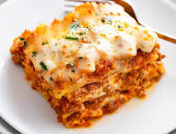

Lasagna

Description
Lasagna is a wide, flat sheet of pasta.
Lasagna can refer to either the type of noodle or to the typical lasagna dish which is a dish made with several
layers of lasagna sheets with sauce and other ingredients, such as meats and cheese, in between
the lasagna noodles.
Ingredients
- Meat: This super meaty lasagna has sweet Italian sausage and lean ground beef.
- Onion and garlic: An onion and two cloves of garlic are cooked with the meat to add tons of flavor.
- Tomato products:You'll need a can of crushed tomatoes, two cans of tomato sauce, and two cans of tomato paste.
Steps
- Boil pasta: Cook in a large pot of salted water per the recipe below.
- Prepare meat sauce: Cook sausage and beef with onion and garlic. Drain well, add the pasta sauce & simmer it for a few minutes to thicken.
- Combine cheese mixture:Stir the cheese mixture together in a bowl.
- Layer & bake:Layer the meat sauce and cheese mixture with lasagna noodles and bake until browned and bubbly.